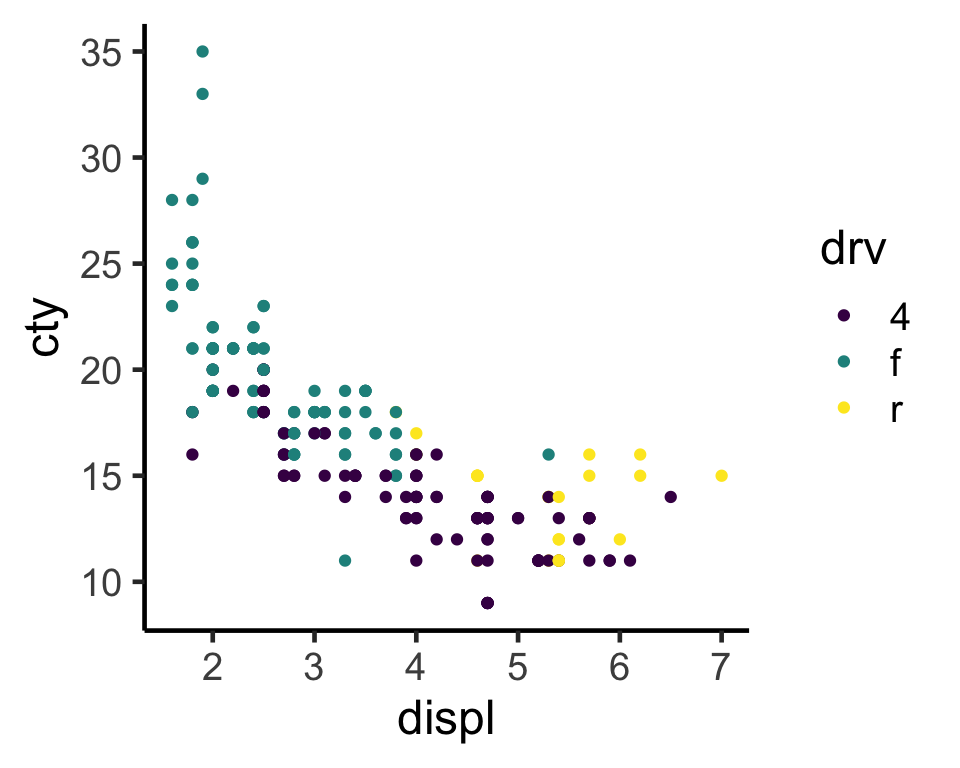
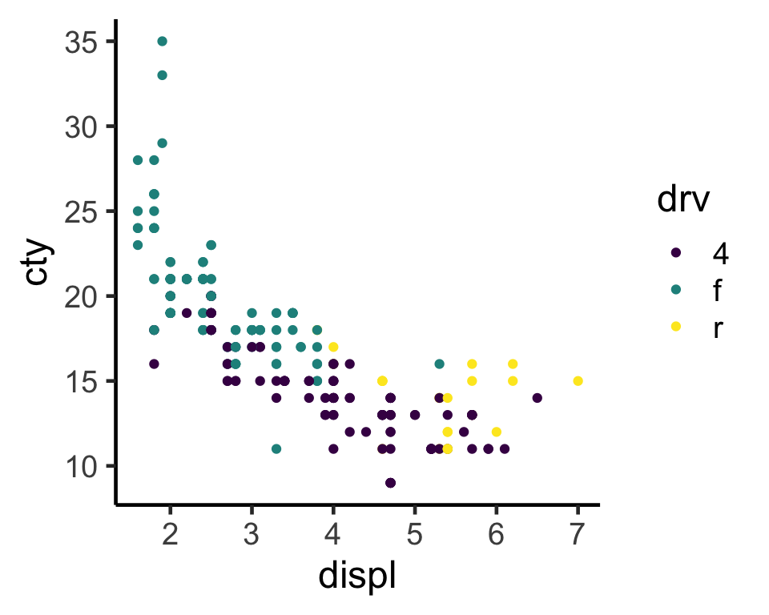

ggplot(mpg) +
aes(x=displ, y=cty, color=drv) +
geom_point() +
scale_color_viridis_d() +
theme_classic(base_size=18)
ここは引用
print()こんな感じ。| 左揃え | 中央揃え | 右揃え |
|---|---|---|
| 1 | 2 | 3 |
| 4 | 5 | 6 |
ggplot(mpg) +
aes(x=displ, y=cty, color=drv) +
geom_point() +
scale_color_viridis_d() +
theme_classic(base_size=18)
lst = [2, 6, 9]
def square(i):
return i * i
lst2 = [square(i) for i in lst]
for j in lst2:
print("version: " + str(j))version: 4
version: 36
version: 81こっちは4割幅
こっちは6割幅